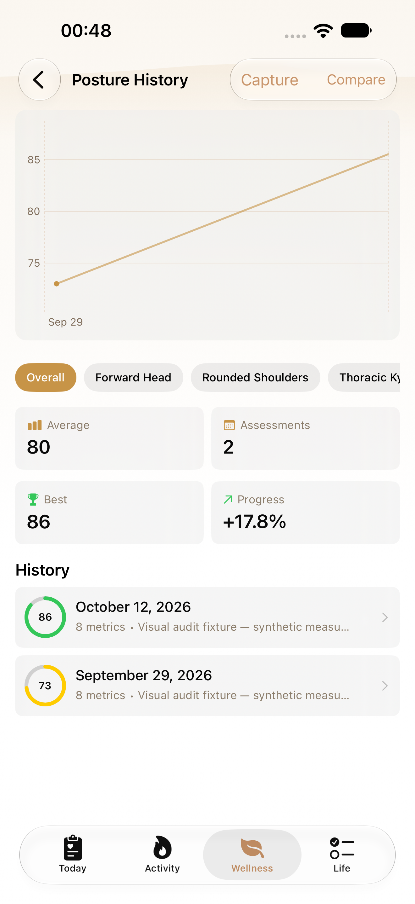
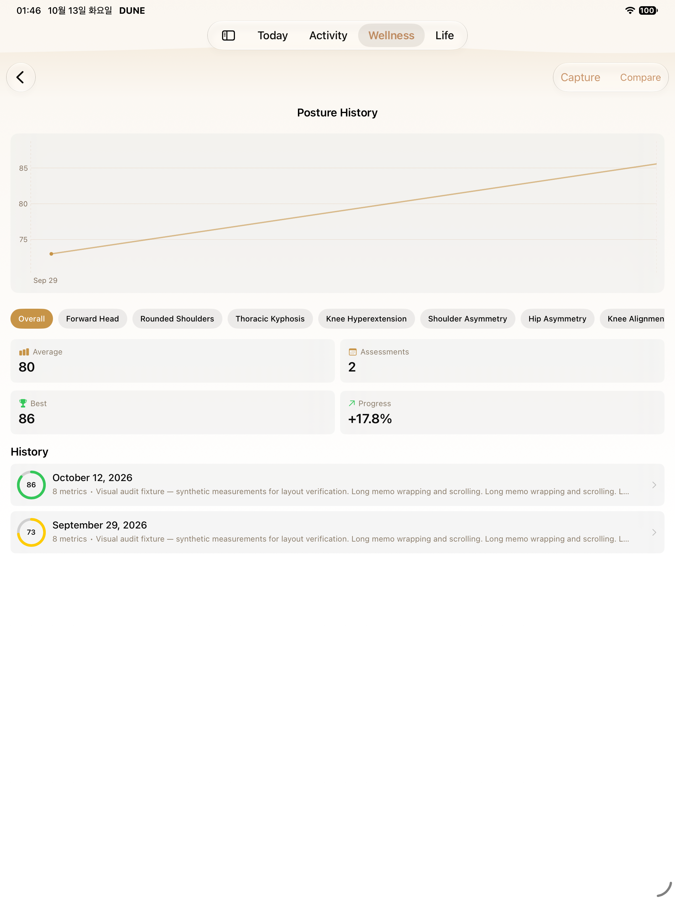
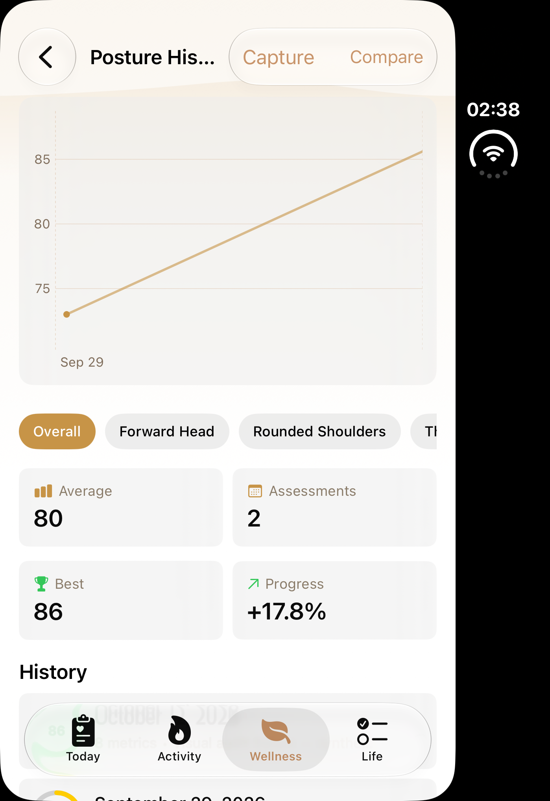
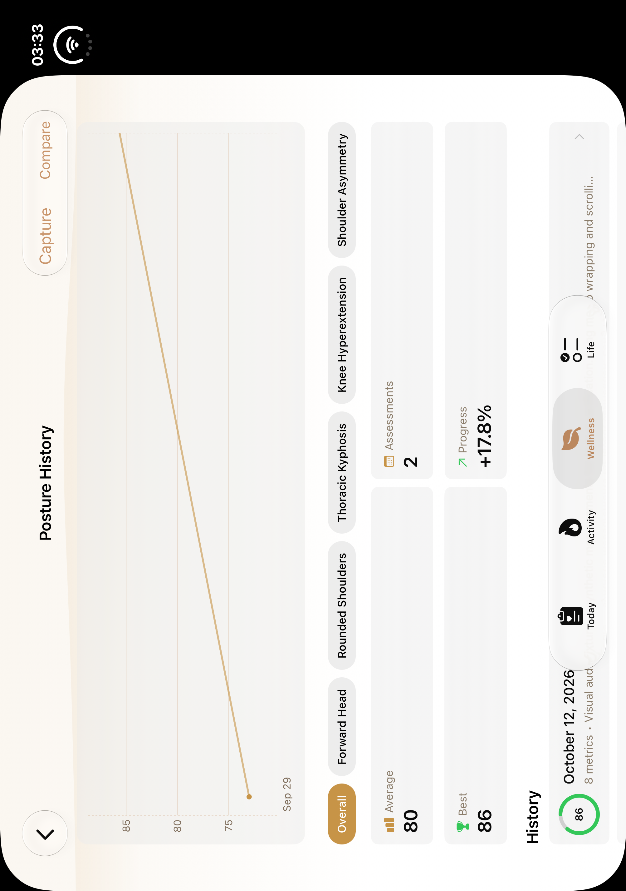
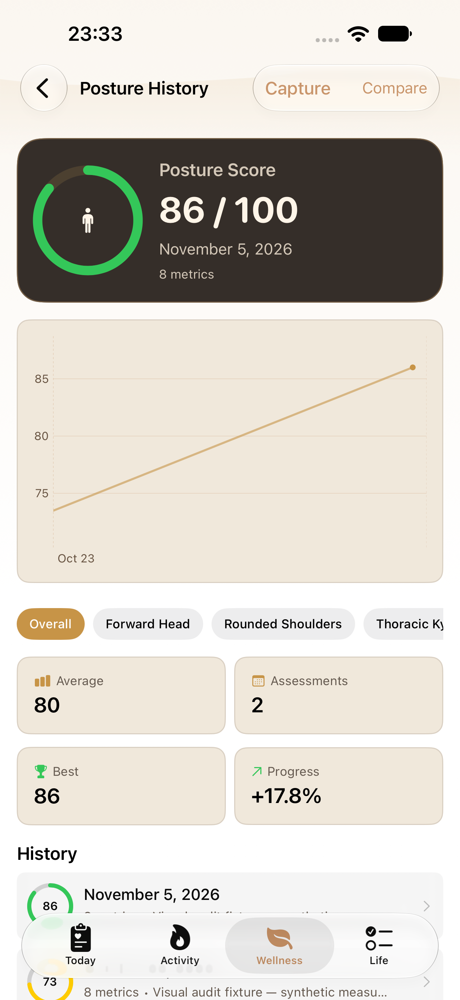
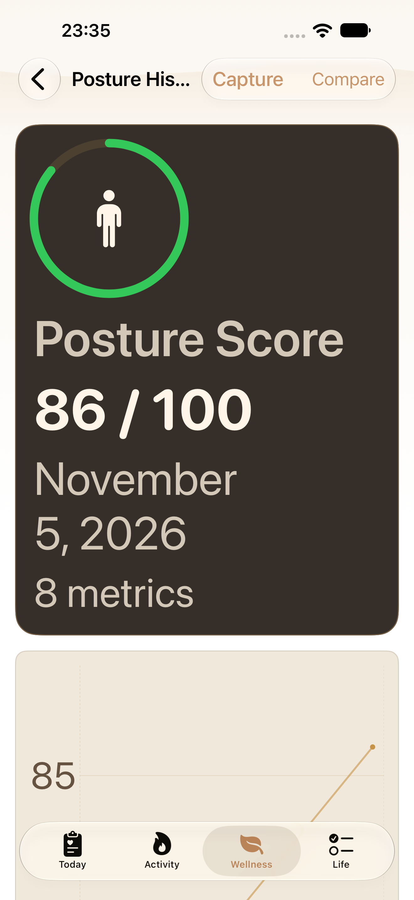
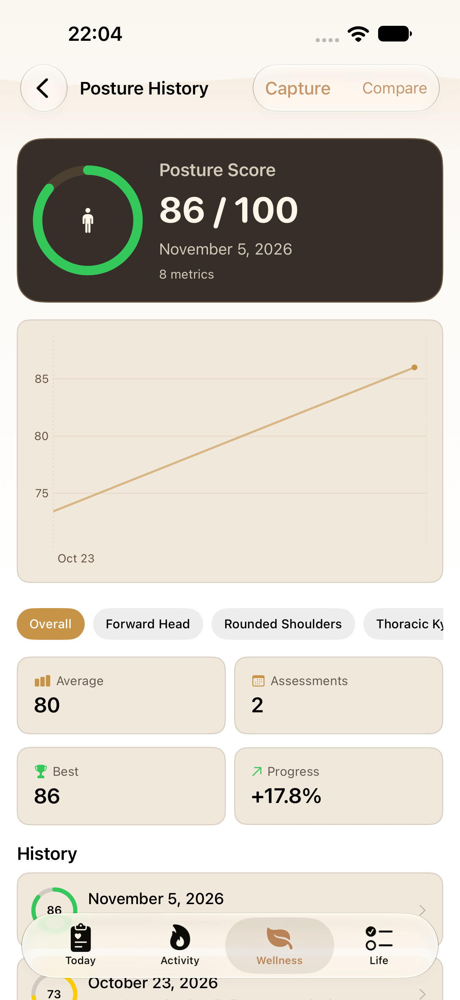
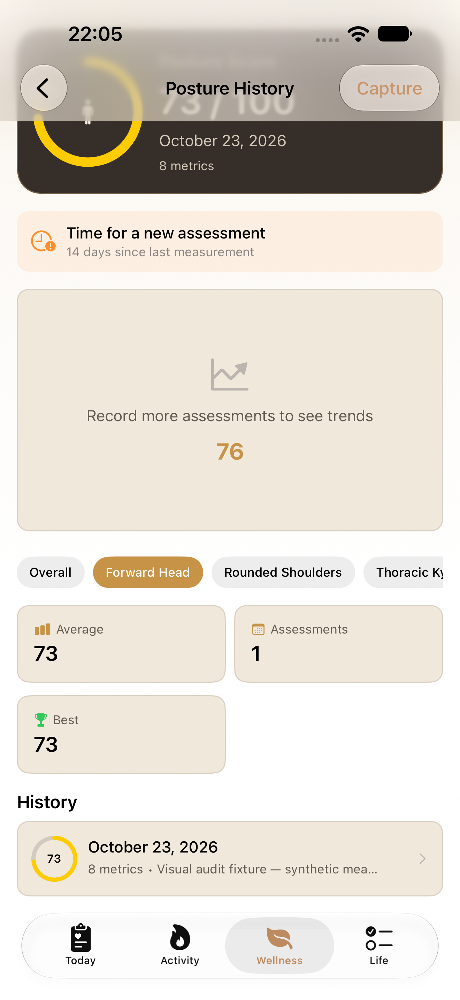
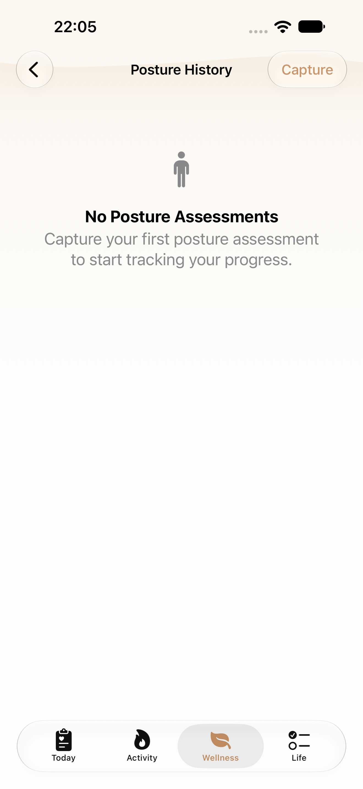
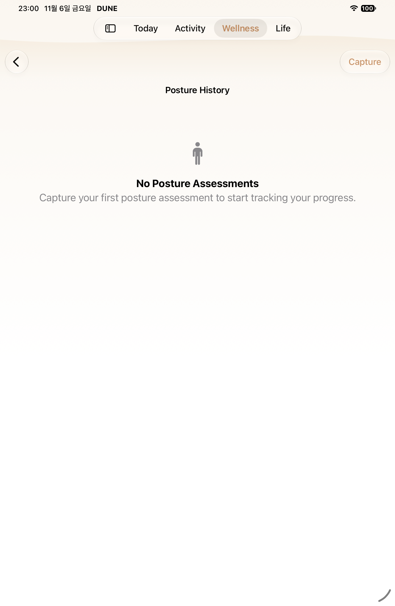

P05 · B06 native gallery
Selected simulator PNG/AX pairs. Historical before captures and diagnostics are separate. Source revisions and original test counts are preserved in manifest and evidence JSON.
Pending or limited- iPad MAX not captured on current source
- Duo closed and open P05/P07/P08 current-source captures unupdated

regular · before
Historical P05 baseline
source 443a32ca4fe8

ipad · before
Historical P05 baseline
source 443a32ca4fe8

duo · before
Historical P05 baseline
source 443a32ca4fe8

duo-open · before
Historical P05 baseline
source 443a32ca4fe8

regular · after
Current normal history entry
source 7b9138b6dbcc
AX tree
regular · after
Current MAX history entry
source 7b9138b6dbcc
AX tree
regular · after
Supplemental previous-source: P05 latest recorded score and trend
source 88c6b1a1d3a3
AX tree
regular · after
Supplemental previous-source: P05 real remaining score and seven-day reminder
source 88c6b1a1d3a3
AX tree
regular · after
Supplemental previous-source: P05 empty history after isolated fixture deletion
source 88c6b1a1d3a3
AX treeregular · after
Supplemental previous-source MAX
source 88c6b1a1d3a3
AX tree ipad · after
ipad · after
iPad current normal latest score
source 0d6a724bc6da
AX tree
ipad · after
iPad current empty after isolated fixture deletion
source 0d6a724bc6da
AX tree